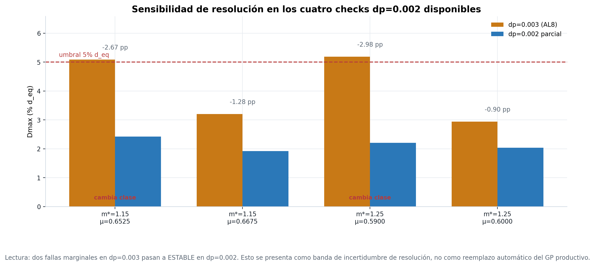
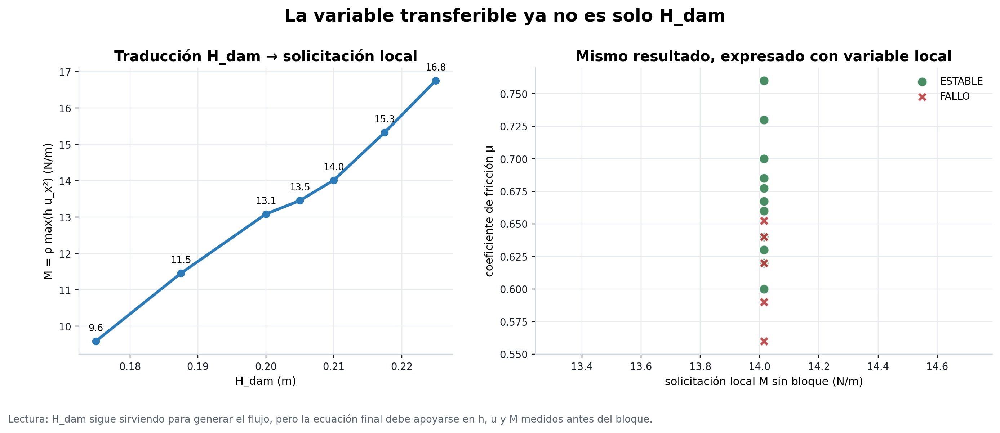

Post-convergencia: frontera, variables locales e incertidumbre de resolución
Esta página deja presentable el estado actual: campaña productiva hasta AL8, migración preliminar a variables locales y checks finos dp=0.002 4/6. Las verificaciones preproducción vuelven aquí para que la historia completa quede en una sola web.
Estado ejecutivo
- Casos oficiales
- 93 hasta AL8, sin parciales
- Estables / Fallos
- 54 / 39 criterio Dmax > 5% d_eq
- AL8
- 8/8 OK 5 ESTABLE, 3 FALLO
- dp=0.002
- 4/6 parcial para sensibilidad
- GP local LOO
- 0.861 variables M, μ, m*
- Hidráulica local
- 14/14 sin bloque + bloque ref.
Resultado que se puede presentar hoy
AL8 cerró dos franjas en H=0.210: para m*=1.15 el corte queda entre μ=0.6525 y μ=0.6675; para m*=1.25 queda entre μ=0.5900 y μ=0.6000.
Advertencia honesta
El parcial dp=0.002 muestra que 2 de 4 casos cambian de clase respecto de dp=0.003. Eso se informa como incertidumbre de resolución cerca del umbral, no como tesis cerrada todavía.
Figuras principales






Verificaciones restauradas
Estas figuras vuelven a la página post-convergencia para no perder el argumento de defensibilidad: solver hidráulico, contacto sin forzante y coherencia de fuerza motriz sobre resistencia.


Frase defendible: el modelo no queda validado experimentalmente para este bloque específico, pero sí queda verificado por resolución, contrastado con benchmark hidráulico, revisado por contacto y comparado con balance analítico.
Qué significa cada variable clave
H_damAltura inicial de la columna dam-break. Sirve para generar el flujo, pero no es la variable final más transferible.h_localProfundidad/cota local medida en gauges antes del bloque, en la condición sin bloque.u_xVelocidad longitudinal local del flujo, positiva hacia la playa y el bloque.M = ρ max(h u_x²)Solicitación local tipo flujo de momentum por ancho. Se le decía proxy porque resume la física local sin resolver presión/arrastre exactos.μCoeficiente de fricción bloque-playa usado para barrer estabilidad.m*Masa relativa: 1.00 es el bloque base, 0.85 más liviano y 1.25 más pesado.Resumen por lote
| Lote | Casos oficiales | Estables | Fallos | Dmax mediano |
|---|---|---|---|---|
| Piloto | 5 | 2 | 3 | 5.02% |
| Batch 2 | 8 | 5 | 3 | 3.05% |
| Batch 3 | 10 | 4 | 6 | 7.31% |
| Batch 4 masa | 11 | 6 | 5 | 4.28% |
| AL1 | 8 | 7 | 1 | 1.25% |
| AL2 | 10 | 5 | 5 | 4.75% |
| AL3 | 8 | 8 | 0 | 3.17% |
| AL4 | 8 | 5 | 3 | 4.22% |
| AL5 | 8 | 4 | 4 | 4.47% |
| AL6 | 7 | 3 | 4 | 5.08% |
| AL7 local | 2 | 0 | 2 | 19.83% |
| AL8 | 8 | 5 | 3 | 3.07% |
Datos trazables: master_production_story.csv, dp002_vs_dp003_partial_comparison.csv y hydraulic_all_phases_summary.csv.
Página final agregada
La continuación está separada para conversar con el profesor sin mezclar resultados con planificación: qué falta, cuántas simulaciones faltan y cómo se transforma esto en cierre de tesis.